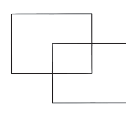
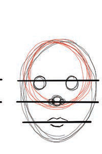

Therefore, you should practice drawing the human being, guided by the use of the shapes that you have learned.
Drawing a human being's head
To draw the shape of a human being's head, consider the following steps:
(i)
Draw two overlapping circular shapes—one resembling a ball and the other shaped like a mango;
(ii)
Divide the shape you have drawn in to three parts using lines;
(iii)
Draw line to indicate the position of the ears, eyes, nose, and mouth; and
(iv)
Then, draw the ears, eyes, nose, and mouth following the guidelines you created in step three.
Figure 6 shows steps on how to use circular shapes to draw human being's head.

1

2

3

4
Figure 6: How to use circular shapes in drawing a head
Drawing human being's hands
Drawing the human being's hands, start by drawing one hand and finalising by drawing another hand.
Draw two cylinders connected by a circle shape to get the shape of one complete hand.
Repeat this step to draw the shape of the second hand as shown in Figure 7.